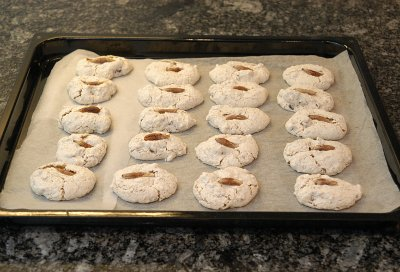

| Zutaten für 4 Personen: | |
| 200 g | Datteln |
| 200 g | Mandeln gerieben |
| 3 | Eiweiss |
| 200 g | Zucker |
| 1 Päckli | Vanillezucker |
Datteln entsteinen und in feine Stücke schneiden. Mandeln und Vanillezucker dazugeben und vermischen.
Eiweiss zu steifem Schnee schlagen, Zucker löffelweise dazu schlagen und mit der Dattel-Mandel-Masse vermischen.
Blech mit Pergamentpapier belegen. Mit Hilfe von 2 Kaffeelöffeln längliche Makronen formen und darauf setzen. Mit Dattelstreifen (oder den Dattelsteinen) garnieren und bei mässiger Hitze (150°C) 15 - 20 Minuten backen.
Herbert Eigenmann, Code: DTL
Am 30.8.2010 zubereitet. Ich habe die Makronen vielleicht etwas zu gross geformt und dadurch reichten die 15 Minuten Backzeit knapp nicht. Sie schmeckte mir etwas gar süss aber Sandra scheint die gut zu mögen. Das Dattelaroma kommt gut durch. RE
@LINKBACK_TAG@ @WAKELOCK@